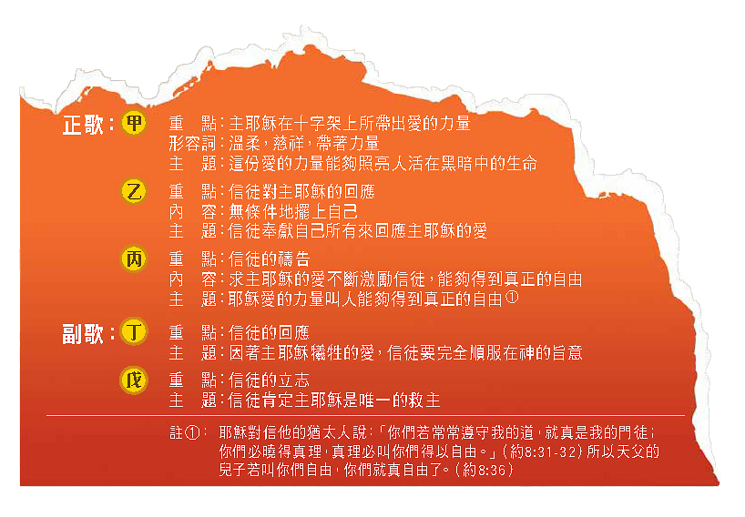
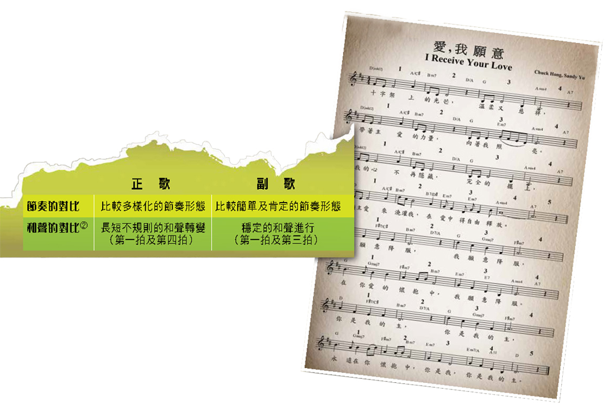
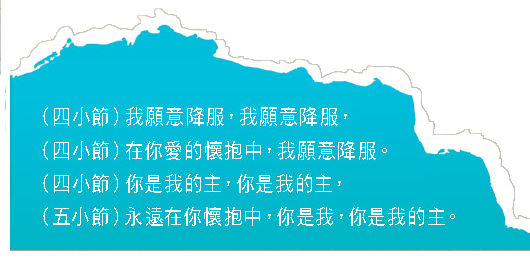
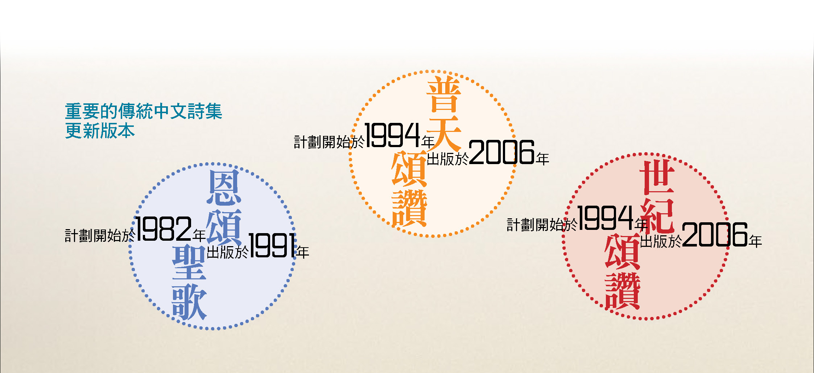
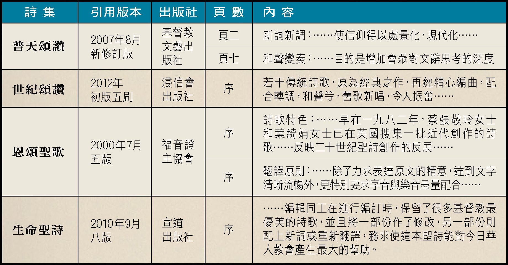
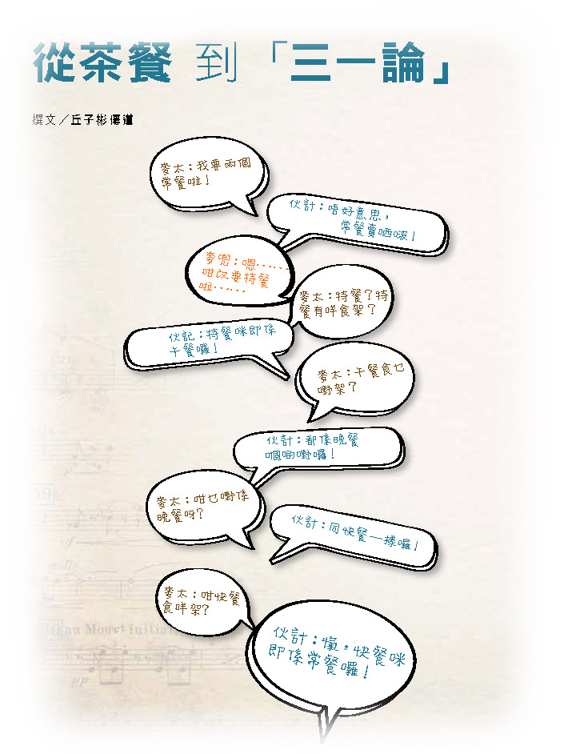
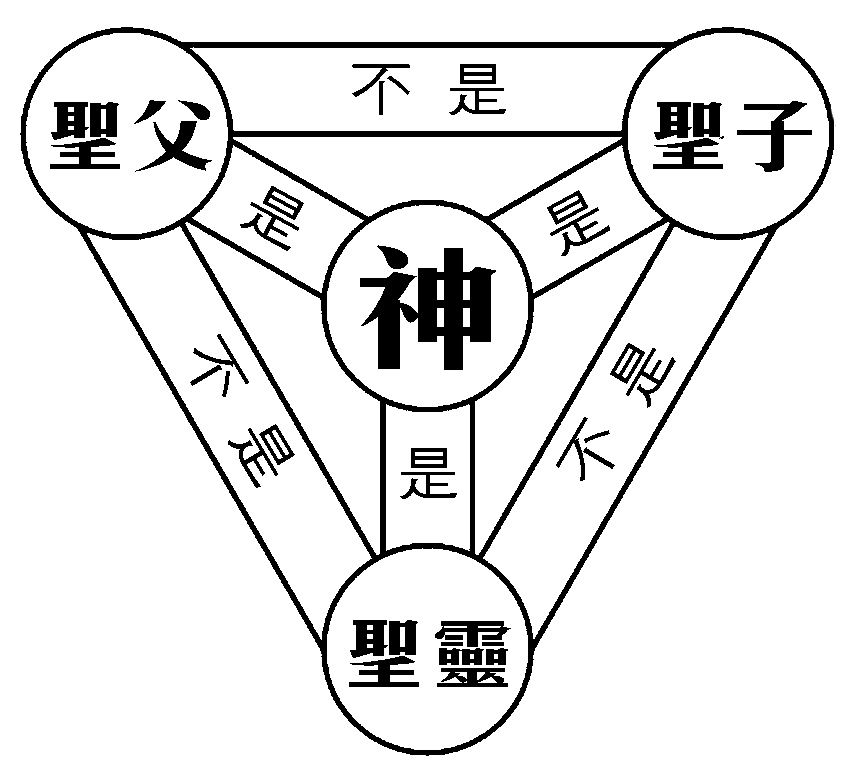

1653《愛，我願意》_洪啟元
Love Is My Will
由洪啟元及游智婷作曲及填詞，
https://www.yanfook.org.hk/channel_details?type=channel&cat=1&pkey=7
撰文／ 張樂聖傳道
詩歌《愛，我願意》由洪啟元及游智婷作曲及填詞，自1999年出版以後，一直廣受各地教會重用，可肯定的是這首詩歌有其獨特之處。筆者嘗試從歌詞及樂曲兩個層面分析，讓我
們能加以了解及更準確地運用這首詩歌。
《愛，我願意》的用字比較感性，如「溫柔」、「慈祥」、「在你愛的懷抱中」等字句容易引起聽眾的共鳴；再加上其旋律簡單非常（沒有複雜的節奏），聽過幾遍便能唱頌。
不過，不少人會被這些「富有感情」的元素吸引而「自我陶醉」，覺得在主愛的懷抱中真好，忽略詩歌最重要的部分—基督徒因耶穌愛的犧牲而作的回應。
筆者會從以下數方面作分析，讓大家更深入明白歌詞中的對比和邏輯及音樂的對比所帶出的演繹。為方便討論，歌詞分為以下段落：
歌詞中的邏輯
詩歌的歌詞清楚地表達正歌及副歌之間的邏輯，其主要的骨幹是因耶穌的犧牲而
帶出愛（正歌）；接著是我們每一位領受這份愛的人之回應（副歌）：

音樂上的對比
旋律動聽其中一個重要的元素為對比（參樂譜）：

總括來說，正歌比較多變化的音樂能表達耶穌愛的力量及愛的動力；副歌的穩定則最能夠表達信徒內心的感恩及立志。因此，唱頌者在演繹副歌時應採用比較穩定及肯定的聲音來表達其「立志」。
刻意的延長效果
在音樂分析層面上，詩歌兩次「樂句上的延長」達到不同效果（參樂譜）：
小節）願主愛來澆灌我，在愛中得自由釋放。
正歌中第五小節的延長能夠加強「得到真正自由」的釋放感覺，且有足夠時間作「降服」的準備：
副歌中第五小節的延長用作加強「立志」的肯定，重覆一次地講「你是我，你是我的主」：

歌詞中的對比
正歌的歌詞是表達耶穌在十架犧牲的愛，愛的背後是痛苦的代價：被誤會，被嘲笑，被毒打，被釘死……
絕非「溫柔又慈祥」。耶穌的犧牲是要救我們每一個有罪的人，這就是「溫柔又慈祥」的表現，亦因耶穌勝過死亡才帶給我們真正的自由。所以，敬拜隊唱這一段時不應以男女間那份「溫柔」的愛來表達，而是用一種「自覺不配得耶穌的愛」的心情和感動來演繹。耶穌的愛是帶著痛苦的代價，我們的感恩的領受也該帶著感激及感動的眼淚。
相反地，副歌的歌詞是基督徒的回應，是因為耶穌愛的犧牲而作的順服回應，「我願意降服」。可是，音樂的推動力往往讓敬拜隊很容易在副歌中用一種比較大聲的表達來演繹，而不能夠切合「順服」的心情。
太激動的演繹可能會把「願意順服的心」變成一種「自我中心」及「不可一世」的表達。因此，副歌的首兩句都應以一種較為細聲及平靜的聲音來演繹，從而帶出「順服」的心。「我願意降服」應該是一種內心的表達，是個人與神之間的立約。敬拜隊應帶領會眾進入這種感恩回應及平靜立志的心情裡，而非一種過份激動的感情表演及宣洩。
副歌中第五小節的延長用作加強「立志」的肯定，
重覆一次地講「你是我，你是我的主」：
註②： 分析是按筆者改編的和聲版本。
https://www.yanfook.org.hk/channel_details?type=channel&cat=1&pkey=35
撰文／ 張樂聖傳道
華人聖樂界也面對同樣的困難：不少香港教會的傳統詩集已長期收藏地庫，一些
教會或仍把其放在崇拜禮堂的椅背，最可悲的是當為植堂預備購買清單時，並沒考慮購買足夠的傳統詩集。這些情況都反映著普遍香港教會遇到的困難：傳統詩歌慢慢被淘汰。由於香港的教會一直受著不同層面及程度的文化衝擊，包括語言及流行音樂，愈來愈多傳統教會慢慢轉變使用流行詩歌，並減少唱傳統詩歌。
當彼得和門徒四處傳福音時，彼得看見神的異象，呼召他傳福音給外邞人。聖靈提
醒他不要分門別類（徒11：12），因為救恩要臨到所有相信耶穌的人，包括不同文
化的（徒11：18）人。當時彼得要到耶路撒冷與那些奉割禮的門徒爭辯（徒11：2），目的是要他們明白，任何文化的人都可得著福音的好處。
在舊約時期，神吩咐以色列人要在日常生活中配帶「繸子」，成為其文化的一部
份，希望他們記念神的話語（民15：37–41）。今天，由於我們是不同文化的人，加上已有「聖經」，隨時也可記念神的話語，因此不需再配帶「繸子」。歷史不斷演變，生活文化也不斷改變，舊的事物終有一天被取而代之，唯神的話語不能歷久
常新，「進入文化」是要人得著福音。
十七世紀巴洛克時期的偉大作曲家巴哈，曾以十五世紀宗教改革家馬丁路德的詩歌寫成一首繪炙人口管風琴作品；十九世紀浪漫作曲家就以巴哈的旋律創作高難度的鋼琴作品。這些音樂題材既能保存原作品的味道，也能夠注入新的音樂元素，讓作品更能被該時期的聽眾接受。
重要的傳統中文詩集
更新版本

從這四本詩集的序言及介紹中，均能夠見到整個華人聖樂界一直都是努力於「詩歌活化工程」：

恩福堂敬拜部現正朝向「詩歌活化」這個方向努力，透過舉辦不同的工作坊，讓弟兄姊妹參與翻譯及創作的事工，並藉此教育會眾欣賞及支持本土化的詩歌。由一群專業及有經驗的弟兄姊妹及教牧同工組成的歌詞組，不斷努力把一些好的傳統詩歌以廣東話翻譯，讓會眾更容易明白歌詞的內容，從而投入敬拜中。盼望弟兄姊妹日
後能在崇拜唱出這些詩歌，並讓你從心裡發出感恩，口裡唱出熟悉的廣東話歌詞，將榮耀歸給神。
https://www.yanfook.org.hk/channel_details?type=channel&cat=1&pkey=8
撰文／丘子彬傳道

相信大多未觀賞過電影《麥兜故事》的讀者
都會聽過以上令人捧腹大笑的對白。現實中亦一樣，我們不難發現教會附近的茶餐廳，不論是午餐、茶餐及常餐，甚或是晚餐，總有一些不過是換了叫法（價錢也不一樣），卻又是相同的食物。我們笑以上的對白，是因為對白內容和事情的荒謬。但是，我們的信仰又有沒有同樣的盲點？有沒有「常餐即特餐，特餐即午餐，午餐即常餐」的情況出現？其實，這種情況不時在我們的禱告，甚至是唱詩時發生：「親愛的天父，感謝你賜下救恩，死在十字架上，為我們流出寶血……」這樣一來，會眾就可能會混同三位一體的概念。
弟兄姊妹或許發現，近年崇拜時唱詩歌《有一位神》，敬拜隊都只帶領會眾唱第一節的正歌及副歌。這並非基於時間所限，而是當第二節的歌詞連接副歌時，會出現混淆三位一體的情況：「有一位神，高坐在榮耀的寶座，卻死在十架挽救人墮落。有一位神，我們的神，唯一的神，名叫耶和華……」由於在舊約中，聖經學者一般同意「耶和華」一詞是用以尊稱父神，而詩歌的第二節卻明顯地指耶穌，意即耶和華（父神）就是那死在十架上的神。早期教會對保持信仰「正統」（Orthodoxy）十分嚴謹①
。
教父們召開「第一次君士坦丁堡會議」（First
Council of Constantinople），以排除「三一論」及「基督論」的異端（非正統神學觀），其中一種被評為異端的是「形態論」（Modalism，即撒伯流主義Sabellianism），當中論到神是這樣的：神只有一位一體，聖父、聖子、聖靈在不同時候，不同情況下戴上「面具」，扮演三個不同的角色，以三個不同「形態」出現②。
就形態論者而言，舊約中的耶和華、新約中死在十字架上的耶穌基督，和現在居於信徒中的聖靈實為同一位（即「常餐、特餐和午餐並無分別」）。形態論者認為耶穌完全等同上帝，所以死在十字架上的是耶穌，也是聖父，也是聖靈。於早期教會而言，形態論者就是異端，要被遂出教會（當時所有地方教會同屬一個大公教會）。
在宗教改革後，正統基督教信仰再次肯定「三位一體」是合乎聖經啟示，成為整合其他教義（如救恩論、基督論）的中心教義。正統基督教信仰對三位一體的描述是：聖父不是聖子，聖子不是聖靈，聖靈不是聖父，三個不同的位格，但只有一位神。
時至今日，獨立教會當中亦有甚多持形態論的「唯獨耶穌」教派（Jesus
Only，又包括「五旬節單一教派」Oneness Pentecostalism），另著名的形態論者有曾被喻為繼葛培理牧師後，美國中最具影響力的黑人佈道家傑克斯牧師（T.D.
Jakes）③。

即使形態論會帶來不少解經困難及影響教義的整全性，現今信徒卻因它較「三一論」簡單及容易理解而接受，其影響亦見於詩歌中。現代詩歌（或「當代基督教音樂」Contemporary
Christian Music）起源於美國6 0 至7
0 年代的「耶穌運動」（Jesus Movement，原名為「耶穌音樂」Jesus
Music）。那時，不少信主的音樂人都加入了如「葡萄園教會」（其創始人John Wimber也是音樂人）的靈恩教會，又以流行樂及搖滾樂的風格編寫基督教詩歌。由於其音樂風格與傳統詩歌大相徑庭，又較著重情感表達，所以初期傳統教會較為排斥。靈恩教會的廣泛接納及採用導致不少現代詩歌帶有靈恩運動之影（如《Shine
Jesus Shine》、《Consuming Fire》）④。
當時，不少信徒開始把敬拜的重心從父神轉移至耶穌基督上，就連如傳統的三一論者John
Wimber也呼籲信徒這樣敬拜，以致不少詩歌（如《Here I am to
Worship》）也寫得像只有耶穌基督才是神。
好些創作人因受到「唯獨耶穌」的形態論影響，即使是現代詩歌也包含混淆三一神之位格的歌詞（如《Awesome God》）。此外，音樂人往往把音樂的美感（優美的旋律、情感的表達、樂曲與歌詞的配合等）放在首位，歌詞內容則較為次要⑤。在美國一年一度的基督教音樂節，我的神學院老師恩師雷士頓博士（Dr.
Tim Ralston）舉辦工作坊，藉此教授基督徒音樂人。
當他說：「你們知道嗎？你們是透過歌曲教授神學」，大家都面露詫異，瞪大了眼睛說：「嗄？我們從來沒想過！」音樂人留意的是音樂美感及個人情
註①： 一般而言，正統基督教派普遍認同早期教會的信仰是純正的，惟偏差是始於成為羅馬國教後慢慢演變的。
註②： 當時希羅文化流行著面具劇，如中國的戲曲般。
註③： 其教會「陶匠之家」（Potter’s
House）逾三萬會眾，每週廣播有十萬人以上收聽。即使他不會公開否定「三位一體」，但其著作及言論讓人看見形態論的影響。「陶匠之家」的信仰陳述論到神是如此說：「There
is one God, Creator of all things,
infinitely perfect, and eternally existing in three manifestations: Father, Son
and Holy Spirit」（意譯：這世界只有一位神，
衪是萬物的創造者，是完全的，並永恆地以三種形態顯現出來：聖父、聖子和聖靈），其中「Manifestation」是「五旬節單一教派」所使用的「形態論」術語。
註④： 甚多現代詩歌求聖靈降臨也是出於靈恩運動的「靈洗」。《Shine
Jesus Shine》歌詞中的「Flow River flow」（即川流不息）亦用作形容「靈洗」。
註⑤： 這是普遍受到現代藝術觀影響，認為所有藝術創作純粹表達創作者的情感。某程度上，這是絕對化的個人感受，而相對化一些神學觀念。
註⑥： 現代詩歌的起源和「三一論」之間的關係之分析純屬筆者個人觀點。
註⑦：
此詩歌的內容使人聯想啟示錄第五章的景象，然而在經文教導站在寶座前的是羔羊，坐在寶座上的是父神，首先接受敬拜的是父神，及後才到羔羊。換句話說，歌詞中「坐在寶座上聖潔羔羊」就出現混淆。然而，在神學層面上，基督是坐在父神右邊的萬王之王，亦有祂自己的寶座。所以，羔羊坐在寶座上也說得通，只是我們應明白箇中邏輯。
註⑧： 除「三一論」外，「靈洗」更為普遍，又如《Above
All》的歌詞：「Like a rose, trampled on the ground, You〔耶穌〕took
thefall, and thought of me, above all（像玫瑰，被踐踏在地，降低自己，因祢愛我，超越一切）」，把「我」的地位形容得高於父神的錯謬。
感之表達，自己的作品能否成為灌輸神學觀念的媒介則是較次要的因素。再者，作曲者與作詞者大多為不同的人，加上基督教音樂商業化促使出版商漠視神學之傳遞，即使不少作者為傳統的三一論者，歌詞中亦常流露對「三位一體」不嚴謹的現象，就如現代華語詩歌受廣泛影響
⑥。以上所舉之例（《有一位神》、《Awesome
God》）皆是較明顯地混淆三位一體的詩歌，大多寫得較含糊（如《坐在寶座上聖潔羔羊》）
⑦。這篇文章不是要勸阻弟兄姊妹欣賞詩歌，掃大家的興，反而希望大家能更欣賞詩歌：除了喜歡其悅耳的旋律和歌詞，舒發個人感受外，還能多了解歌詞內容中的神學─明辨其神學觀念與聖經的內容、正統基督教神學及自己的信念之異同⑧，以助自己更清楚了解其信仰立場，在認識神的真理上更成長，於詩歌的欣賞上更進深。
* 關於現代詩歌的起源、「唯獨耶穌」、「形態論」等資料
可到維基百科查考「Contemporary
Christian Music」、「Jesus
Only」、「Jesus Movement」、「Oneness
Pentecostal」、「Sabellianism」。

https://www.zanmeishi.com/artist/princes-music/detail.html
洪启元传道是华人基督教界知名的敬拜主领及创作人，他曾是“赞美之泉”音乐事工的创始人之一。
早期在《赞美之泉》事奉的期间，他的首张专辑《让赞美飞扬》在华人教会中可说是家喻户晓，他所写的许多敬拜诗歌更是我们耳熟能详的。
洪启元制作的第一张专辑《让赞美飞扬》在华人敬拜音乐中，已经成为一个指标，销售量也保持着目前华人音乐界中无人超越的记录。
洪启元不单单是华人敬拜音乐界知名的一位敬拜主领，他的作品更是广为华人教会所使用。
华人诗歌的原创运动也在洪启元的倡导和鼓励下，形成了一股潮流，使得华人敬拜音乐有了新的风貌。
在2000年，洪启元成立了“王子音乐”，并无可厚非地成为了这个事工的灵魂人物，除了担任音乐制作、编曲、演唱以外，也统筹安排所有的人事。
他的作品《为主赢得城市》，不仅获得金曲奖的提名，更唱遍了华人教会，在华人敬拜赞美运动中具有极大的影响力。
“王子音乐”自2000年创立起，将近千名来自全球各地的专业基督徒音乐人联结成为一个庞大的网络。
来自不同地区、不同种族的音乐人都能因着王子音乐的平台，藉由专业的录音、培训、现场聚会的投入，有份于华人基督教圣乐的服事，使得王子音乐能以各种不同的音乐形态，达到丰富了华人圣乐的内容。
他连接和成就众多基督教专业音乐人的心愿，使得这个网络在海外能成为众多以华人会众为主的教会的祝福。
王子音乐曾陆续推出了10余张赞美诗歌专辑在海外发行，在美国、加拿大、马来西亚、新加坡、印度尼西亚、台湾、香港等地，他举行过多场赞美音乐会。
同时，他们还致力于教会音乐事奉人员的培训和教会乐团的培训辅助，提倡音乐布道和敬拜赞美，强调正确的版权使用。
“王子音乐”一直鼓励华人圣乐创作，希望通过建立健全的发行管道，藉音乐宣扬基督圣洁的国度。
洪启元传道曾经多次来中国访问，近期他的很多诗歌创作也都源于在中国所见的一些感人故事。
在这张最新的专辑《青青草原上》的音乐录制期间，王子音乐与中国交响乐团和两个中国内地基督教两会的诗班进行了合作——福建省基督教两会、福州市花巷教会青年诗班和北京基督教两会新歌圣乐团，这个企划由他们一起完成。
在预备录音和排练的过程中，这些海内外的弟兄姐妹建立了友谊和默契。
以各样的恩赐，一起来歌颂那位为我们死在十字架上的主耶稣基督，一起来诠释这个救赎的信息。
无论是创作人、音乐人，或是参与这个音乐事工的其他弟兄姐妹，都是要传递基督信仰当中那个最重要的信息：耶稣爱你，爱我，爱我们每个人，我们的好处不在祂以外。希望聆听的你和我，也能一起来颂赞主耶稣的圣名。
浩浩穹苍，茫茫草原；神的同在，永不隔绝；天无际，地无边，神的爱从亘古到永远。
《青青草原上》这张最新音乐专辑主要表现就是向普世发声，将心里面的赞美唱给创造我们的主，荣耀的主。
然而，就主要创作人洪启元个人而言，在这张他个人的第四张专辑当中，我们可以察觉到他现在的音乐创作风格洋溢着浓郁的中国风味，目的是要让基督教的敬拜音乐中，流露出中华文化特质的元素，为了达成这个目标，洪启元投入许多“寻根”的努力，也显露出将民族的文化音乐与基督教圣乐结合的企图，期望这份成功能成为以后世代的属灵资产。
但是，作为当代华人圣乐创作的先驱，洪启元个人的创作很难以一个固定形态来界定，似乎许多不同的音乐曲风，他都有诠释和创作的可能。
而且他所写出并已经发行的两百多首创作，无疑的，已经广泛地为华人教会所使用，有很多更是我们已经耳熟能详的诗歌，就如《让赞美飞扬》、《爱，我愿意》、《认识你真好》、《平安的七月夜》、《耶和华祝福满满》、《赐我自由》、《爱
喜乐 生命》、《为主赢得城市》、《为主来梦想》、《耶和华膀臂环绕我》等。
洪启元近年来的创作，以东方为本，以西学为用，试图创造勾勒出一个具有中国特色的敬拜音乐版图，从而说明基督教在文化上能够从中国的思维做内省，走出中国人传统观念中“洋教”的包袱。
由于本身学习神学和音乐的双重背景，洪启元致力于将每首赞美诗都定位成一篇精致的信息，然后再赋予充满情感的旋律，使用音高与节奏的排列，将信息释放出来。
有别于我们一般在聆听讲道时以悟性来领受，洪启元的诗歌却引导听者用心来品味，以情感来同理，以全人来敬拜，进而带领我们颂赞那位全能的神。
历经了将近两年的辛劳和努力，由海外基督教“王子音乐”制作的洪启元创作专辑《青青草原上》，七月份已经在中国基督教两会正式出版发行。
这是耶和华所定的日子，让我们一起在其中欢喜快乐，请弟兄姊妹为洪启元传道祷告，求圣灵充满他，使我们的教会有更多更美的音乐来敬拜赞美我们的神。
https://zhuanlan.zhihu.com/p/61521533
游智婷生于1971年10月12日，父亲曾经在军中乐园担任过医生，是一名军医，当他退役之后，他就想到台湾人的性生活并不卫生，所以他决定开办台湾第1家保险套厂，名字叫不二实业。
配合着蒋经国的“两个孩子，刚刚好”项目十分火热。
据台湾《联合报》报道，台湾不二实业公司董事长游启政是虔诚基督徒，却从事令人“想入非非”的行业长达41年。每天摸保险套、做保险套，到现在只要用闻的，就可断定产地、质量，堪称“台湾最懂保险套的男人”。
“投入这个行业，我有承受别人暧昧眼光的心理准备。”个性拘谨、低调的游启政，早年在金门当军医，每天看军中乐园(俗称八三一)公娼应付阿兵哥，却几乎无人用保险套，致性病交互传染，只能打盘尼林西治疗，令他感触极深。
游启政退伍后，因缘际会认识当时的“国产实业”董事长张添根、张秀政父子。张家父子有感于第三世界人口膨胀，导致饥荒不断，找他谈“生产保险套以节育人口”，他则想推动性病预防，双方一拍即合，决定在淡水设厂。
“刚开始满惨的，别人开工厂可选好位置，保险套因太敏感，只准设在距道路30米以外；且这项"新兴行业"一开始在台湾无用武之地，只能以外销为主。”
不二实业一度因台湾退出联合国导致销路中断，更积极加强研发。好不容易咸鱼翻生，并以独门产业在台湾立于不败之地，至今每月生产十二万箩(一箩十二打)保险套。
“其实我牺牲满大的，很喜欢小孩，却只敢生2个。”游政幽默地说，因怕生太多被调侃“保险套不怎么保险”；但他即使至今被问到职业时，都低调回答“卖医疗器材”。
“保险套虽小，学问却很大。”游启政说，不少人因观念错误、方法不对，甚至乱加情趣用品而影响避孕效果。有人习惯“每次都套两层”，却不知套两层反倒易破。他说，最好自己以指腹操作，不宜由伴侣代劳，尤忌指甲或牙齿触及保险套。
80年代的时候，游智婷就去了美国留学。时间长了就有了美国国籍，她从小就比较高的音乐天分，父母一直催着他练琴，他考入了加州大学洛杉矶分校的钢琴演奏系，硕士学位是在南加州大学钢琴演奏系得到的。
尚且不知道游智婷的父亲是什么时候相信基督，只知道有的事情从小就信基督。
她是一个标准的台湾基督教人士。出生于不错的家庭。
游智婷在加州大学洛杉矶分校的钢琴演奏成绩比较优异，可以单独开演奏会，在当届的学生当中属于比较高的水平。但是游智婷顿感一切空虚。
演奏会叮当叮当地弹了90分钟之后，结束了。努力背在脑子里的几万颗音符，流泻出来后如风般消失了。贝多芬的奏鸣曲、李斯特的《弄臣》和《森林的细语》、盖希文的《蓝色狂想协奏曲》……究竟来的500位听众了解多少?收到的花束和花篮几天后就谢了。</p>
<p>不久之后，连听过演奏会的老友也不记得几个音，那些绞尽脑汁的诠释、每天三四小时地一练再练、练到肩膀发酸的技巧，似乎没有对生命和灵魂产生任何的悸动和改变。我开始对未来失去了安全感，迷惑和问号充满在脑子里
所以她决定创办了赞美之泉，其实创办赞美之泉有两种说法。
第一种说法是游智婷在教会祷告当中求上帝，上帝给了他一个异象，就是要创办，赞美之泉，音乐事工。他因此决定用一生来侍奉耶稣。
另一个说法是万美兰所看见的。他看到很多人在台上演奏赞美诗，赞美泉水流入了每个人的心间，这也是赞美之泉这首歌的由来。
游智婷还有一个的说法，就是说她认为华人流行福音音乐。所以她觉得这一个空白应该填补。赞美之泉也的确填补了这一个空白。在没之前的兴起，对何耀珊的人也有一些影响，何耀珊和她的老公看准了福音音乐的商机，于是想要在流行音乐圈和福音音乐圈。两边开花，疯狂买本，然而最后却落得一身落寞。
游智婷在大学的时候是学古典音乐的，他的父母本来想让他成为一位音乐教授，但是她放弃了她父母的愿望。创办赞美之泉，投身于福音流行这一行列里。
万美兰，李信仪，游智婷是本来一起租住房子的三个室友。他们是在一次基督教的复兴营上所认识。
当时台湾开放留学的限制，，所以李信仪可以来到，南加州大学就读，音乐艺术系，他后来返回台湾成为了台湾台南一家教会唱诗班的教师尤其是帮助残疾孩子组建唱诗班唱歌。万美兰子就读于，电脑电机工程系。后来前往欧洲某信息公司担任职位。
李信仪来自三代基督徒家庭，而万美兰才刚刚相信耶稣两年。万美兰的文采不错，经常创作一些小诗，然后被游智婷拿去配上优美的乐曲，就是赞美之泉早期的歌曲的由来。
大二的暑假，在南加州青年福音营认识二位使我属灵生命突破成长的好朋友。游智婷(现今赞美之泉音乐总监圣乐牧师)、万美兰(赞美之泉「有一位神」、「认识你真好」、「我知道我的救赎者活着」等作品的作词者)。我们因就读同一所大学，就相约大三同租一间公寓在外住宿，就这样，我们成为室友。我们常常一起分享彼此团契、教会、校园里的新鲜事，曾经一起听敬拜诗歌疯狂跳舞，吵到隔壁邻居来敲门。考试期间同饮一壶咖啡熬夜，互握彼此的手同声祷告代求，留下许多用青春写下的美丽回忆。当时，美兰有一本祷告手册，就像她的日记本一样，她将牧师的证道、灵修的心得、感动的经文、神给她的话语，以文字和插图记录下来。智婷见美兰写的灵修笔记，文词优雅，对神的爱和感动，写的如诗如画，每一篇都美得像诗，就常常拿美兰写的东西到琴房，经她巧手的编曲化为串串动人的旋律。智婷主修钢琴演奏，听她弹琴、看她演奏，就算是难度甚高的奏鸣曲，轻松即兴的爵士小品，她的神情、她的触键、音符从她指间快速流动的完美，会赞叹这人生下来就是来弹钢琴的。特别是听她演奏敬拜歌曲，好像看到天使就坐在你眼前，敬拜音乐的深度、恩膏，赞美乐章的喜乐丰富，她诠释得淋漓尽致。我渴望拥有她们这种敬虔的生命，喜乐的心，敏锐的灵，时时记录主在生命里种种的感动，能向神歌咏、感恩、颂赞。
——李信仪
李信仪，早期的创作的诗歌有《耶和华祝福满满》《全然向你》，万美兰创作的歌曲就更多，比如《赞美之泉》《彩虹下的约定》《有一位神》《光明之子》。
由之前还和一位比较年长的男性一起创作了歌曲。那位年长的男性名叫做洪启元。
在确定成立赞美之泉这个乐团的时候，游智婷顿时感到财力人力都不足。在财力上他的父亲赞助了他，一开始他们之前只是在南加州附近四处巡回，然后传上自己的诗歌并没有想要做大，但是因为他们的诗歌越是受欢迎就想到了出专辑的念头，这个时候游智婷的父亲游启政就决定出钱给他出专辑。专辑首先是在台湾地区贩卖的。
第1张专辑销量很好，但是洪启元宣称这比刘德华的专辑卖的还要好，那就比较夸张了，还有贩卖超过100万的说法。在当时的台湾乐坛几乎不可能。因为当时张学友和张惠妹打破纪录的唱片销量也就100多万，如果他们之前真的卖到那个数字的话不可能不会有相关的报道。
1997年赞美之泉出版的第2张专辑又华祝福满满同时开始世界各地的巡演受到世界各地也就是去各地的华人教会，还有香港地区和台湾地区的教会。
与此同时好消息电视台正在筹备当中。好消息电视台是华人基督教圈子里影响力最大的电视台。创办者名叫曾国生，他的女儿叫做曾祥怡，正在台湾大学就读历史系，之后会前往美国和游智婷在一场音乐会上见面，然后被游智婷招入麾下。
1997年的时候，赞美之泉的领导人。是洪启元，不是游智婷。对于这个安排，有很多人猜测事由洪启元年纪最老。资历最深。还有人认为是因为游智婷的女性身份，而这一点应该是无稽之谈，因为当时赞美之泉有别的女性主唱。当时游智婷虽然是专辑的制作人，那是他只是在洪启元身边的一个伴奏者，在游智婷和洪启元闹翻之前，游智婷几乎没有上台作为歌手，更别说更作为敬拜主领，更别说作为牧师了。
洪启元和游智婷合作了不少的歌曲，比如《兴起发光》《爱我愿意》《爱喜乐生命》《生命的凯歌》等等等等。
年轻人基本上都不记得洪启元这个名字，他所创作的歌曲太过于久远，而且他已经很久没有在大众面前抛头露面，没有好消息，电视台等电视台来提高他的曝光度，他的作品也没有一直推陈出新。
洪启元当时一直强调大家都是中国人，他是福建人，就和当时的台湾意识所相贴合，一切会在陈水扁上台之后改变，实际上不管是基督教还是佛教在台湾的话，都是会受到意识形态的影响。
尤其是游智婷。因为他父亲的关系，台湾妇幼保健院经常赞助赞美之泉的演唱会。也就是因为他的父亲和台湾当局关系密切，所以在我之前的立场也会随着台湾当局的变化所摆动。
赞美之泉，虽然在加州的洛杉矶注册，其实核心业务还是在台湾和其他所有的福音乐团一样。
在港台娱乐圈鼎盛的时期，台湾是福音音乐的大本营。最早的时候是天韵合唱团。天韵合唱团在台湾当地很有影响力，他们的歌曲在基督教内部传唱，比如《野地的花》《耶稣爱你》，在基督教之外，也有一定的名气，并且被当时的国民党政府所表彰。天韵合唱团的出现，是台湾基督教传媒兴起的一个标志，从此之后几乎所有的，福音乐团的核心活动区域都是在台湾。
还有一方面就是国语歌的覆盖面比粤语歌要广。自从基督教传入中国以来，很多的歌曲都是国语歌不管是自我创作的还是外国赞美诗翻译出来的。
http://www.hdchurch.org/ministry/smallgroup/news/7767
海淀堂诗班作为赞美神和传播福音的重要肢体，充分展现了教会的风采，这不仅对海淀堂的圣事礼仪，同时也对平时主日礼拜起到了积极作用。因此以吴伟庆牧师为首的教牧团队十分重视诗班的灵命成长，除了牧师会亲自带领各诗班团契灵修外，还经常邀请国内外知名的教牧人员来海淀堂为各诗班团契培训。本月的第一个主日，即11月6日，应吴伟庆牧师的邀请，著名“赞美之泉”音乐事工的创始人之一，现任美国“王子音乐”总裁洪启元传道来到海淀堂，主持清泉和新的赞美诗班的主日学活动。
洪启元老师是毕业于美国维真基督教的基督教艺术硕士，他的专攻方向是敬拜主领，因此与其他老师不同的是他具备音乐和神学两方面的修养，因此洪老师的主日学授课方式也备受期待，这一天四楼玻璃教室里座无虚席。

洪老师主日学课程的主题是《圣经》中的诗篇，诗篇的希伯来文名称为“赞美诗”，足见其重要的本质是赞美神。诗篇的目的尽人皆知，洪老师就是以“为什么说诗篇的目的是赞美神”开始自己的主日学课程。他提出问题后，弟兄姊妹的回答非常踊跃，气氛一下子就活跃起来了，洪老师一一点评了弟兄姊妹的答案。最后洪老师给我们举出了“确凿的证据”：共计5卷的诗篇，每一卷的结尾都明明的写着：“你们要赞美耶和华！”，篇篇如此！洪老师语重心长的和大家说：“回答问题不光要知道结果，更要注重过程，读经尤其如此，你们应该用这样的方式去细细读经！”洪老师一亮相就显示出别具一格的授课风格，大家的精神都为之一振。

紧接着洪老师指导大家应该如何读经，他将诗篇中的诗文分门别类，让弟兄姊妹们茅塞顿开：
首先介绍的是哈利路亚诗，就是以哈利路亚开头，以哈利路亚结尾的诗，比如诗篇103—107篇，111—118篇，146—150篇都是如此。
其次介绍的是字母诗，众所周知《圣经》旧约的原文是希伯来文，因为希伯来文由22个字母组成，所以在希伯来文学中有一种文学体叫字母诗，就是将22个字母按照从前到后的顺序作为诗的开头，比如在诗篇119篇中这种文学手法被发挥到相当高的水平，它由176节诗文构成，176除以22等于8，就是每8节诗文为一小节，而这一小节都是用同一个首字母为开头的，这样每8节一个首字母，共计22个字母，正好是176节诗文，但这还不是更绝的，更绝的是《圣经》中的《耶利米哀歌》，细心的读者会发现，它里面所有的诗文的节数都是22节或者22的倍数，大家一定猜到了，就是《耶利米哀歌》的诗文中整篇都是字母诗组成，感谢神赐给希伯来人如此的智慧，用这种文体写出这么美妙的诗歌。
接着，洪老师又给我们讲解了一类《圣经》中非常少见的诗文，就是“诅咒诗”（7,35,40,55,58,59,69,79,109,137,144），如最有代表性也是诅咒意味最浓的诗篇109：8—20节，如果读者此时看到这节诗文的内容并知道作者是大卫时一定会问：为什么这样“恶毒的”的诅咒会出现在《圣经》中？上帝怎么能容忍他拣选的子民不爱别人还诅咒别人呢？我们作为一个基督徒不是要爱人如己吗，难道可以去诅咒别人吗？这些内容似乎与基督徒伦理相违背，当时洪老师就提出了这样尖锐的问题让大家思考。最后洪老师做了总结：大卫之所以写出这段诗文，确实是他的真情实感，是当时真实的表现，但是这类诗文最后的结尾都是认识到自己的错误并请上帝耶和华按照神的意思去审判处置敌人，而不是按照大卫自己的意思审判处置敌人，这也是告诉我们每个基督徒，我们作为一个神造的人，诅咒抱怨你的“敌人”是难免的，但是最后我们要懂得交托，将审判处置的权利完完全全交托给我们的天父上帝，神会审判处置恶人，我们就无须再为如何审判处置他而伤脑筋了，天父上帝也确确实实会按照公义去审判处置恶人的，因为神是公义的，圣洁的真神！
接着，洪老师介绍了诗篇中他非常喜欢的一首诗，诗篇第22首，原因就是这首诗的12-18节准确无误的再现了主耶稣受难时的情景，我们知道《诗篇》是主耶稣来到人世前近1000年时写的，这使我们不得不相信《圣经》确实是神的话语，他藉着他的仆人以色列王大卫的口，向世人告知了主耶稣基督将来到世上，正如洪启元老师说的，当你深入了解了《圣经》的时候，你会有这样一种感觉：让你相信这个世界上没有神比相信这个世界上有神还要难！

之后洪老师介绍了诗篇中的一类叫上行诗的诗文，如诗篇120—134篇，洪老师推测此类诗文是当年希伯来人每逢重要节期登圣山或圣殿之阶梯时诵读或歌唱的歌集。现在当大家看到这些诗时会发现这些诗都有重复的句子同时比较简短，为什么会这样安排呢？洪老师幽默的解释道：“因为大家在排队登山时候还要唱大段大段诗文会死人的”。
接着，洪老师在解读诗文的时候，还从音乐的角度一边弹奏，一边向我们介绍了诗篇中许多音乐术语，如细拉和朝鹿这样的名词，细拉就是节奏渐强后又很快渐慢时的小小停顿或延长，因为要突然变节奏必然会停一下；而朝鹿则是清晨初露的意思，洪老师告诉我们要不是从音乐的角度去解释这些词，我们很难理解是什么意思。感谢主，差遣洪老师这样一位既懂音乐又懂神学的老师给我们授课，通过这段课程内容使我们从音乐的角度对诗篇有了新的认识。

然后洪老师向我们介绍了希伯来文学中的一种文体——平行体，如完全平行（类似中文的对账）、部分平行、反向平行、复合平行。
随后，洪老师又向我们简单介绍了一个在神学领域比较新的概念：统合式的崇拜（简单的讲就是将各种崇拜方式统合到一起来进行对神的敬拜，比如海淀堂有中文聚会，也有英文聚会这就是一种统合式的敬拜方式），并向我们展示了以色列先民起初在旷野中建造的存放约柜的幕帐。

最后，洪老师带领我们欣赏了各种版本的《奇异恩典》，包括非常前卫的韩国街舞版的《奇异恩典》，电影版的《奇异恩典》，美国顶级贝斯手的贝斯版《奇异恩典》以及世界三大男高音版的《奇异恩典》等多达二十余个版本的《奇异恩典》，让我们真正的领略到在全世界范围内主恩典的奇异！

韩国街舞版“奇异恩典”

贝斯版“奇异恩典”

三高版“奇异恩典”
美好的时光总是过的很快，本次主日学在弟兄姊妹的掌声中、欢笑中经历了“上下半场”，历时近4个小时很快进入了尾声，我们非常感谢海淀堂我们安排此次学习，感谢洪启元传道的倾情授课，感谢主耶稣用他丰盛的慈爱呼召我们聚集在一起聆听神的话语，点燃我们每一个弟兄姊妹心中属灵的火焰，使我们发自内心的感谢主，赞美主！哈利路亚！
洪老师最后指出：“读经需要仔细，从不同的角度来看圣经，所得到的答案是不同的”。诗班的弟兄姊妹通过此次培训深刻明白了一个道理：原来赞美不单单是用嗓子唱歌，而是心灵与主合一，只有这样，唱出来的歌曲才会有感染力。唱歌的恩赐来源于主，赞美的能力来源于主，心灵的感动更来源于主。诗班的合一，就是在主里的“爱”合一，在“爱”里合一的歌曲才是最好听的。感谢主，通过神的仆人的口使大家明白神就是爱！
洪启元传道简介：
洪启元，祖籍泉州，出生于台湾，是毕业于美国维真基督教的基督教艺术硕士，他的专攻方向是敬拜主领。他曾是著名“赞美之泉”音乐事工的创始人之一，他的首张创作专辑《让赞美飞扬》在华人教会中已是家喻户晓，该专辑的销量超过了流行歌星刘德华的单张专辑。另外他创作的许多敬拜诗歌都是我们所熟悉的，如：《耶和华祝福满满》、《爱，我愿意》等。他现任美国“王子音乐”总裁，在华人的敬拜赞美运动中具有极大的影响力。可以说，全世界凡是有华人基督徒的地方，就有人唱他所写的歌。